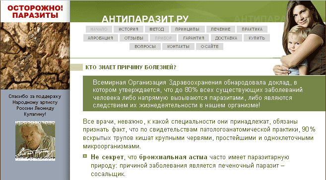

Знаете ли Вы, какой опасности мы подвергаемся каждую минуту, ибо в каждом из нас живут сотни паразитов?! Об этом прекрасно осведомлены специалисты портала Антипаразит.ру, которые не просто тупо предостерегают человечество, но и являются проводниками великого знания — эффективного способа борьбы с невидимыми, на первый взгляд, паразитами…
Знаете ли Вы, какой опасности мы подвергаемся каждую минуту, ибо в каждом из нас живут сотни паразитов?! Об этом прекрасно осведомлены специалисты портала Антипаразит.ру, которые не просто тупо предостерегают человечество, но и являются проводниками великого знания — эффективного способа борьбы с невидимыми, на первый взгляд, паразитами. Все врачи — не важно, какой бы специальности они ни были — должны признать тот факт, что 90% вскрытых патологоанатомами трупов кишат крупными червями, простейшими и одноклеточными. Более того, бронхиальная астма часто имеет паразитарную природу, причиной заболевания является печёночный паразит сосальщик, сахарный диабет может иметь паразитарные корни (трематода крупного рогатого скота), больные раком имеют желудочно-кишечный тракт, переполненный сухими каловыми массами, что является прекрасной средой для обитания червей; экзема и псориаз — это болезни от недостатка кремния, использованного паразитами, поселившимися в организме человека. Простейшие одноклеточные паразиты поражают детей уже в утробе матери, и для борьбы с ними нельзя применить ни антибиотики, ни облучение, ни операции. И никто не избежит участи быть поражённым паразитами разных мастей. Как видно, под паразитами создатели портала понимают довольно широкий спектр существ.

Невидимые паразиты вызывают аллергизацию организма поражённого человека, снижают сопротивляемость инфекционным заболеваниям и создают предрасположенность к соматическим заболеваниям, а также снижают эффективность вакцинопрофилактики. По оценке Всемирного банка, экономический ущерб от кишечных гельминтов занимает 4-е место среди всех болезней и травм. Учитывая важность борьбы с паразитарными болезнями для многих стран, 54-я сессия Всемирной ассамблеи здравоохранения уже в 2001 г. одобрила стратегию борьбы с гельминтозами. При воздействии алкоголя или никотина паразиты приобретают колоссальную скорость размножения и колонизируют все ткани и органы человека. Уже в роддомах женщины и новорождённые заражаются стафилококками, хламидиями, трихомонадами и прочими гадами. С попустительства медиков люди, не осведомлённые об опасности вяло протекающих паразитарных болезней, держат в своих домах собак и кошек — носителей огромного количества паразитов, которых они рассеивают повсюду в жильё и заражают хозяев. И при этом не проводятся никакие специальные мероприятия по профилактике распространения паразитов.
Однако, наука не стоит на месте. Был определён диапазон частот у различных живых объектов: мух, жуков, пауков, блох, муравьев. Он оказался в пределах от 1000000 до 1500000 герц. Высшую среди насекомых пропускную способность продемонстрировали тараканы. Слава Богу, они в организмах людей ещё не завелись. И тут в головах учёных возникла идея. Если человек, имеющий трематоду, будет держаться за частотный генератор, в то время как он производит 434000 герц (трематодный диапазон) то, что произойдет с взрослой трематодой? И что же со взрослым человеком? Это предположение было проверено на себе Хильдой Кларк в отношении не тремадоты, а сальмонелл и вируса герпеса, постоянным носителем которых она была, бедняжка. После трехминутного воздействия была снова выполнена проверка — признаков их присутствия в органах не было обнаружено! Не было характерного звукового излучения присущей им частоты. Действительно ли они погибли? Может, они просто «онемели» или спрятались, вышел из строя генератор? Но вскоре пропали и внешние симптомы. Все это было слишком просто и невероятно. Кстати, у мёртвых насекомых также имеется частотно-пропускная полоса, хотя гораздо более узкая, а у заболеваний бывает ремиссия… Таким образом, это явление не является привилегией только живых существ.
На портале Антипаразит.ру в качестве панацеи предлагается электролечение. По частоте Вы легко определяете до вида любой вирус, бактерию, простейших, а затем, зная их уязвимую частоту, убиваете невидимых паразитов по специальной методике.
Метод, само собой, является безопасным. Достаточно от нескольких до нескольких сотен раз подержаться за генератор (правда, всё очень красиво оформлено, можно в подарочной упаковке), и болезни отступают. Несмотря на множество диапазонов «паразитов», продаваемый прибор однозначно настроен на 30 кГц. Очевидно, эта частота как-то цепляет большинство гадов, и, надеемся, только их. Безопасность ещё раз подтверждается тем фактом, что Парацельс-7 (так называется базовый лечебный прибор) применяется и у детей старше 1 года.
Весело убивать невидимых «паразитов» невидимым излучением. Кажется, есть такая сказка о преимуществах невидимой одежды у знатных, но глупых особ. И в жизни, и в сказке, всё делалось ради вполне видимых денег.
Сайт полон критики других аналогичных приборов — как отечественных, так и зарубежных. А как же! Они только избавляют от паразитов, а данный метод может куда больше! Указывается о возможности с помощью Парацельс-7 излечивать некоторые опухоли, заболевания ЖКТ и дыхательной системы и, конечно же, практически любую инфекцию, независимо от резистентности, локализации и стадии развития.
Таким образом, каждому стоит потратить 12500 рублей и не заморачиваться лечением антиинфекционными препаратами, да и вообще походами по врачам. Тем более, что прибор легко заряжается от сети и должен прослужить 5 лет. Пять лет подержаться за генератор — и всё будет ОК, заодно и отдалённые результаты исследуем. Вдруг микроорганизмы поменяют частоту, произойдет определённая селекция и мы выведем червей-супермутантов, которые поработят мир и уничтожат создателей псевдонаучных методов терапии?
P.S. Может, лучше привязывать генераторы к домашним животным для профилактики?
P.P.S. Интересно, какая частота у вибраторов? Не могут ли они быть одновременно инструментом лечения инфекционных заболеваний?
P.P.P.S. И каких же тогда паразитов в голове убивает мобильный телефон…
В.В. Привольнев